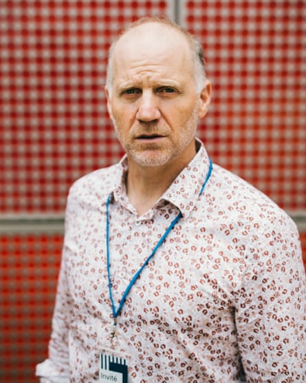

It was on a US-bound flight in March, as Brian Sandberg stressed about whether he would be stopped at security, that the American historian knew the time had come for him to leave his home country.
For months, he had watched Donald Trump’s administration unleash a multipronged attack on academia – slashing funding, targeting international students and deeming certain fields and even keywords off limits. As his plane approached the US, it felt as though the battle had hit home, as Sandberg worried that he would face reprisals over comments he had made during his travels to the French media on the future of research in the US.
“It makes you think about what your status is as a researcher and the principle of academic freedom,” he said. “Things have really changed … The entire system of research and higher education in the United States is really under attack.”
Soon after, he became one of the nearly 300 researchers to apply for a French university’s groundbreaking offer of “scientific asylum”. Launched by Aix-Marseille University, the programme was among the first in Europe to offer reprieve to researchers reeling from the US crackdown on academia, promising three years of funding for about 20 researchers.
Last week, Sandberg was revealed as one of the 39 researchers shortlisted for the programme. “The American system is being destroyed at the moment,” he told the 80 reporters who turned up to meet the candidates. “I think a lot of people in the United States and as well as here in Europe have not understood the level to which all of higher education is being targeted.”
Éric Berton, the president of Aix-Marseille University, likened the programme to the US welcoming academics from France during the second world war.Photograph: Theo Giacometti/The Guardian
As reports began to emerge of funding freezes, cuts and executive orders targeting institutions across the Atlantic, institutions across Europe sprang into action , announcing plans to lure US-based academics.
At Aix-Marseille University, hundreds of applications came in from researchers tied to institutions such as Johns Hopkins University, Nasa, Columbia, Yale and Stanford. Three months after they launched their programme – named Safe Place for Science – the university said it had received more than 500 inquiries.
It was a glimpse of the “historic” moment the world was facing, said Éric Berton, the university’s president. “More than 80 years ago, as France was under occupation and repression, America welcomed exiled researchers, offering them a helping hand and allowing them to keep science alive,” he said. “And now, in a sad reversal of history, some American scientists have arrived in France in search of a space for freedom, thought and research.”
Last week, the university opened its doors, allowing reporters to meet a handful of the Americans who were in the final running to join the programme. As high-profile battles play out between universities such as Harvard and the White House, all of them asked that their institutions not be named, citing concerns that their employers could face reprisals.
Some declined to speak to the media, while others asked that their full names not be used, offering a hint of how the Trump administration’s actions are sowing anxiety among academics. “The worry is that we’ve already seen that scientists are being detained at the border. Granted they’re not US citizens, but they’re even saying now that if you speak out against the government, they will deport you,” said a biological anthropologist who asked to be identified only as Lisa. “And so I don’t need anything against me at the moment until I can officially move here with my family.”
James, a climate scientist, said he had mixed feelings about leaving the US for France.Photograph: Theo Giacometti/The Guardian
Together the researchers painted a picture of a profession that had been plunged into uncertainty as the US government slashes spending on research grants and dismantles the federal institutions that manage and hand out funding. Months into Trump’s second presidency, politics is increasingly blurring into academia as the government works to root out anything it deems as “wokeism” from the post-secondary world.
“There’s a lot of censorship now, it’s crazy,” said Carol Lee, an evolutionary biologist, pointing to the list of terms now seen as off-limits in research grant applications. “There are a lot of words that we’re not allowed to use. We’re not allowed to use the words diversity, women, LGBTQ.”
While the swift pace of change had left many nervous about what may lie ahead, many were not taking any chances. “People are moving, for sure,” said Lee. “A lot of top people have already moved to China. And China is laying out the red carpet. If people are getting an offer from Canada, people are moving to Canada.”
For Lisa, the biological anthropologist, the reality of dismantling her life in the US and moving her husband, a schoolteacher, and their two kids across the Atlantic was starting to sink in. “It’s excitement, but it’s nerve-racking,” she said.
She knew she had to get out when it became clear that Trump had won a second term. Months later, she has found a potential path to do so, but is still wrapping her head around all that taking part in Aix-Marseille University’s programme would entail.
“It is a big pay cut,” she said. “My kids are super gung-ho. My husband is just worried that he won’t find a job. Which is my worry too, because I don’t think I’ll be able to afford four of us on my salary.”
But for her, and several others on the shortlist, the view was that there were few other options. “It’s a very discouraging time to be a scientist,” said James, a climate researcher who asked that his full name not be used. “I feel America has always had a sort of anti-intellectual strain – it happens to be very ascendant right now. It’s a relatively small proportion that doesn’t trust scientists, but it’s unfortunately a very powerful segment.”
His wife had also been shortlisted for the same programme in southern France, leaving the couple on the brink of uprooting the lives and careers they had spent decades building in the US. “I have very mixed feelings,” he said. “I’m very grateful that we’ll have the opportunity, but really quite sad that I need the opportunity.”